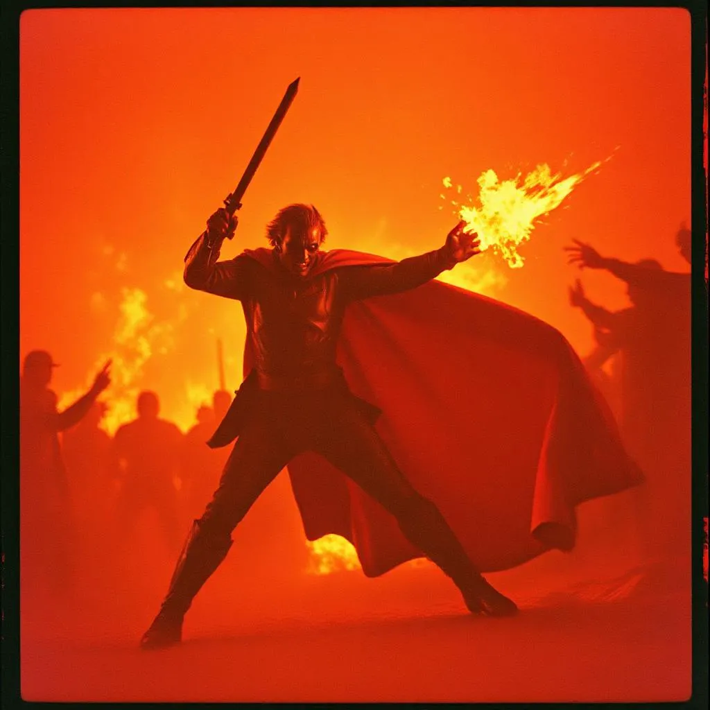

A Hős Diadala
A Vérmágus hatalma már-már isteninek tűnt. Városokat döntött romba egyetlen mozdulattal, a sárkányok pedig meghajoltak parancsa előtt. De minden hatalom mögött ott lapul egy gyengeség. Ez volt Elion, a fényből született mágus, aki nem karddal vagy nyers erővel, hanem tiszta szándékkal lépett Verthar elé. Gyermek volt még, mikor a Vérmágus elvette tőle a családját – most visszatért, nem bosszúval, hanem egy tudással, amit senki más nem mert keresni. Elion felfedte, hogy Verthar hatalma nem a sajátja volt: a Vérkódex minden varázsa a Sötét Létsík lüktető energiahálóján keresztül működött. Egy ritka, fehér kristály – az Ősforrás Szilánkja – képes volt elvágni ezt a kapcsolatot. A végső összecsapás a Vértemplomban zajlott, ahol Verthar először kételkedett magában. Mikor Elion belevágta a szilánkot az oltár szívébe, a mágus sikoltott… nem félelemből, hanem valami mélyebbről. Emberi fájdalomból. A mágia szétfoszlott. A világ fellélegzett.
És Verthar... eltűnt a ködből szőtt múltba, csak egy névként maradva a legendákban.
